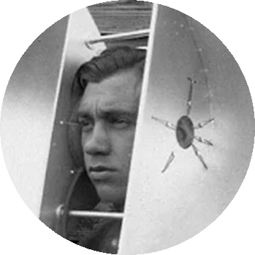
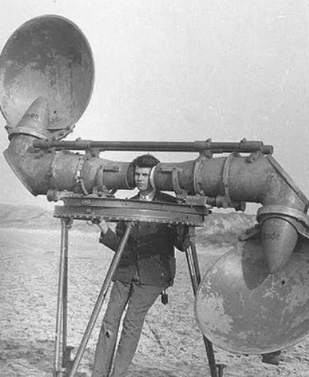

<meta charset="utf-8">
<title>ecoutez</title>
<meta name="claude:viewport-fit-sides" content="cover">
<meta name="description" content="ecoutez — brand creatives. Campaigns, IP collaborations, brands and spaces, made by listening first.">
<link rel="preconnect" href="https://fonts.googleapis.com">
<link rel="preconnect" href="https://fonts.gstatic.com" crossorigin>
<link href="https://fonts.googleapis.com/css2?family=Gloock&family=IBM+Plex+Mono:wght@400;500&family=IBM+Plex+Sans+KR:wght@300;400;500;600&display=swap" rel="stylesheet">
<style>
/* Layout: an archival field report — a listening post. Everything is silver-gelatin grey; the work alone speaks in colour. */
:root {
  --paper: #e9e8e3;      /* fixer-washed print paper, cool not cream */
  --paper-2: #dddcd6;
  --ink: #121211;
  --ink-2: #4a4a46;
  --silver: #8d8c86;
  --rule: #c4c3bc;
  --signal: #b0331f;     /* the only colour that isn't the work: the live "listening" lamp */
  --display: "Gloock", "Bodoni 72", "Didot", Georgia, serif;
  --body: "IBM Plex Sans KR", "Apple SD Gothic Neo", "Malgun Gothic", system-ui, sans-serif;
  --mono: "IBM Plex Mono", ui-monospace, "SFMono-Regular", Menlo, monospace;
  --gx: max(16px, env(safe-area-inset-left, 0px));
  --gxr: max(16px, env(safe-area-inset-right, 0px));
}
@media (prefers-color-scheme: dark) {
  :root:not([data-theme="light"]) {
    --paper: #121211; --paper-2: #1b1b19; --ink: #e6e5df; --ink-2: #a9a8a1;
    --silver: #75746e; --rule: #2e2e2b; --signal: #e0553d; color-scheme: dark;
  }
}
:root[data-theme="dark"] {
  --paper: #121211; --paper-2: #1b1b19; --ink: #e6e5df; --ink-2: #a9a8a1;
  --silver: #75746e; --rule: #2e2e2b; --signal: #e0553d; color-scheme: dark;
}

* { box-sizing: border-box; }
html { scroll-behavior: smooth; }
body {
  margin: 0; background: var(--paper); color: var(--ink);
  font: 400 16px/1.6 var(--body); -webkit-font-smoothing: antialiased;
  overflow-x: hidden;
}
body::before { content: ""; position: fixed; inset: 0 0 auto; height: env(safe-area-inset-top, 0px); z-index: 10; background: var(--paper); }
/* film grain, very light */
body::after {
  content: ""; position: fixed; inset: 0; pointer-events: none; z-index: 60; opacity: .07; mix-blend-mode: multiply;
  background-image: url("data:image/svg+xml;utf8,<svg xmlns='http://www.w3.org/2000/svg' width='160' height='160'><filter id='n'><feTurbulence type='fractalNoise' baseFrequency='.9' numOctaves='2' stitchTiles='stitch'/></filter><rect width='100%' height='100%' filter='url(%23n)'/></svg>");
}
a { color: inherit; }
img { display: block; max-width: 100%; }
.wrap { max-width: 1280px; margin: 0 auto; padding-left: var(--gx); padding-right: var(--gxr); }
.mono { font-family: var(--mono); font-size: 11.5px; letter-spacing: .08em; text-transform: uppercase; }
.ko { word-break: keep-all; }
:focus-visible { outline: 2px solid var(--signal); outline-offset: 3px; }

/* ---------- nav ---------- */
.nav { position: sticky; top: env(safe-area-inset-top, 0px); z-index: 30; background: color-mix(in srgb, var(--paper) 88%, transparent); backdrop-filter: blur(8px); border-bottom: 1px solid var(--rule); }
.nav .wrap { display: flex; align-items: center; gap: 22px; padding-block: 12px; }
.brand { display: flex; align-items: center; gap: 10px; text-decoration: none; }
.brand img { width: 34px; height: 34px; border-radius: 50%; filter: grayscale(1) contrast(1.1); }
.brand b { font: 400 24px/1 var(--display); letter-spacing: -.01em; }
.nav .sp { flex: 1; }
.nav nav { display: flex; gap: 22px; }
.nav nav a { text-decoration: none; color: var(--ink-2); }
.nav nav a:hover { color: var(--ink); }
.lamp { display: inline-flex; align-items: center; gap: 8px; color: var(--ink-2); }
.lamp i { width: 8px; height: 8px; border-radius: 50%; background: var(--signal); box-shadow: 0 0 0 0 var(--signal); animation: lamp 2.4s ease-out infinite; }
@keyframes lamp { 0% { box-shadow: 0 0 0 0 color-mix(in srgb, var(--signal) 60%, transparent); } 100% { box-shadow: 0 0 0 10px transparent; } }
@media (max-width: 720px) { .nav nav { display: none; } }

/* ---------- hero ---------- */
.hero { display: grid; grid-template-columns: 1.25fr .75fr; gap: clamp(24px, 4vw, 64px); align-items: end; padding-block: clamp(36px, 7vw, 88px) 40px; }
.hero > * { min-width: 0; }
.word {
  margin: 0; font: 400 clamp(84px, 17.5vw, 248px)/.82 var(--display); letter-spacing: -.045em;
  margin-left: -.04em;
}
.word span { display: inline-block; }
.thesis { display: grid; grid-template-columns: auto 1fr; gap: 18px 28px; margin-top: clamp(22px, 3vw, 40px); align-items: start; }
.thesis .mono { color: var(--silver); padding-top: 6px; }
.thesis p { margin: 0; }
.thesis .en { font: 400 clamp(22px, 2.5vw, 32px)/1.2 var(--display); letter-spacing: -.01em; text-wrap: balance; max-width: 22ch; }
.thesis .ko { color: var(--ink-2); font-size: 16px; max-width: 34ch; }
.plate { position: relative; margin: 0; }
.plate .frame { position: relative; aspect-ratio: 436 / 531; border: 1px solid var(--ink); padding: 10px; background: var(--paper-2); max-width: 100%; }
.plate .frame img { width: 100%; height: 100%; object-fit: cover; filter: grayscale(1) contrast(1.08); }
.plate canvas { position: absolute; inset: 10px; width: calc(100% - 20px); height: calc(100% - 20px); pointer-events: none; }
.plate figcaption { display: flex; justify-content: space-between; gap: 12px; margin-top: 10px; color: var(--ink-2); }
.plate figcaption span:last-child { text-align: right; }
@media (max-width: 860px) {
  .hero { grid-template-columns: 1fr; }
  .plate { max-width: 420px; }
}

/* ---------- stats strip ---------- */
.strip { border-top: 1px solid var(--ink); border-bottom: 1px solid var(--rule); }
.strip .wrap { display: grid; grid-template-columns: repeat(4, 1fr); }
.strip div { padding-block: 18px; padding-right: 12px; border-right: 1px solid var(--rule); }
.strip div:last-child { border-right: 0; }
.strip div + div { padding-left: 18px; }
.strip b { display: block; font: 400 clamp(32px, 4vw, 52px)/1 var(--display); font-variant-numeric: tabular-nums; }
.strip span { color: var(--ink-2); }
@media (max-width: 640px) {
  .strip .wrap { grid-template-columns: 1fr 1fr; }
  .strip div:nth-child(2) { border-right: 0; }
  .strip div:nth-child(3) { padding-left: 0; }
  .strip div:nth-child(n+3) { border-top: 1px solid var(--rule); }
}

/* ---------- section heads ---------- */
.sec { padding-block: clamp(56px, 8vw, 110px) 0; }
.head { display: grid; grid-template-columns: 1fr auto; gap: 16px; align-items: end; border-bottom: 1px solid var(--ink); padding-bottom: 14px; margin-bottom: 26px; }
.head h2 { margin: 0; font: 400 clamp(40px, 6vw, 84px)/.95 var(--display); letter-spacing: -.03em; text-wrap: balance; }
.head h2 small { display: block; font: 400 15px/1.5 var(--body); letter-spacing: 0; color: var(--ink-2); margin-top: 10px; }
.head .mono { color: var(--silver); text-align: right; }

/* ---------- work ---------- */
.filters { display: flex; flex-wrap: wrap; gap: 8px; margin-bottom: 26px; }
.filters button {
  font: 500 12px/1 var(--mono); letter-spacing: .06em; text-transform: uppercase; cursor: pointer;
  background: transparent; color: var(--ink); border: 1px solid var(--ink); padding: 9px 13px; border-radius: 0;
}
.filters button[aria-pressed="true"] { background: var(--ink); color: var(--paper); }
.filters button sup { font-size: 10px; margin-left: 4px; color: inherit; opacity: .7; }
.grid { display: grid; grid-template-columns: repeat(12, minmax(0, 1fr)); gap: 40px 22px; }
.card { grid-column: span 4; text-align: left; background: none; border: 0; padding: 0; color: inherit; font: inherit; cursor: pointer; display: flex; flex-direction: column; gap: 12px; }
.card.w6 { grid-column: span 6; }
.card.w8 { grid-column: span 8; }
.card .img { position: relative; overflow: hidden; background: var(--paper-2); aspect-ratio: 4 / 3; max-width: 100%; }
.card.tall .img { aspect-ratio: 4 / 5; }
.card.w8 .img { aspect-ratio: 8 / 5; }
.card .img img { width: 100%; height: 100%; object-fit: cover; filter: grayscale(1) contrast(1.06) brightness(1.02); transition: filter .7s ease, transform 1.2s cubic-bezier(.2,.7,.2,1); }
.card:hover .img img, .card:focus-visible .img img, .card.heard .img img { filter: none; transform: scale(1.025); }
.card .tag { position: absolute; left: 10px; top: 10px; background: var(--paper); color: var(--ink); padding: 5px 8px; }
.card .meta { display: grid; grid-template-columns: 1fr auto; gap: 2px 12px; }
.card .meta b { font: 400 23px/1.15 var(--display); letter-spacing: -.01em; }
.card .meta .mono { color: var(--silver); padding-top: 6px; white-space: nowrap; }
.card .meta .ko { grid-column: 1 / -1; color: var(--ink-2); font-size: 14.5px; line-height: 1.5; }
.card[hidden] { display: none; }
@media (max-width: 960px) { .card, .card.w6, .card.w8 { grid-column: span 6; } }
@media (max-width: 600px) { .grid { gap: 34px; } .card, .card.w6, .card.w8 { grid-column: 1 / -1; } }
.note { margin: 34px 0 0; color: var(--silver); max-width: 70ch; font-size: 13.5px; }

/* ---------- method ---------- */
.steps { display: grid; grid-template-columns: repeat(3, minmax(0, 1fr)); border-top: 1px solid var(--rule); }
.step { padding: 26px 26px 30px 0; border-right: 1px solid var(--rule); display: flex; flex-direction: column; gap: 12px; }
.step + .step { padding-left: 26px; }
.step:last-child { border-right: 0; }
.step .mono { color: var(--signal); }
.step h3 { margin: 0; font: 400 clamp(34px, 3.8vw, 52px)/1 var(--display); letter-spacing: -.02em; }
.step h3 em { font-style: normal; color: var(--silver); font-size: .5em; letter-spacing: 0; margin-left: 8px; font-family: var(--body); }
.step p { margin: 0; color: var(--ink-2); max-width: 38ch; }
.step svg { width: 64px; height: 40px; color: var(--ink); }
@media (max-width: 760px) {
  .steps { grid-template-columns: 1fr; }
  .step, .step + .step { padding: 22px 0; border-right: 0; border-bottom: 1px solid var(--rule); }
}

/* ---------- capabilities / record ---------- */
.two { display: grid; grid-template-columns: 1fr 1fr; gap: clamp(28px, 5vw, 80px); }
.two > * { min-width: 0; }
.caps { list-style: none; margin: 0; padding: 0; }
.caps li { display: grid; grid-template-columns: 1fr auto; gap: 12px; padding: 14px 0; border-bottom: 1px solid var(--rule); align-items: baseline; }
.caps li b { font: 400 22px/1.2 var(--display); }
.caps li span { color: var(--ink-2); font-size: 14px; text-align: right; }
.record { width: 100%; border-collapse: collapse; font-variant-numeric: tabular-nums; }
.record td { padding: 13px 0; border-bottom: 1px solid var(--rule); vertical-align: baseline; }
.record td:first-child { width: 7.5em; color: var(--silver); }
.record td b { font-weight: 500; }
.record td span { display: block; color: var(--ink-2); font-size: 14px; }
.sub { margin: 0 0 6px; color: var(--silver); }
@media (max-width: 800px) { .two { grid-template-columns: 1fr; } }

/* ---------- contact ---------- */
.end { padding-block: clamp(70px, 10vw, 140px) 28px; }
.end h2 { margin: 0; font: 400 clamp(56px, 11vw, 168px)/.88 var(--display); letter-spacing: -.045em; text-wrap: balance; }
.end h2 span { color: var(--silver); }
.end .ko { margin: 18px 0 0; color: var(--ink-2); font-size: 17px; }
.reach { display: flex; flex-wrap: wrap; gap: 12px; margin-top: 34px; align-items: center; }
.addr { font: 400 clamp(20px, 2.6vw, 30px)/1.2 var(--display); user-select: all; word-break: break-all; }
.btn { font: 500 12px/1 var(--mono); letter-spacing: .06em; text-transform: uppercase; padding: 12px 16px; border: 1px solid var(--ink); background: var(--ink); color: var(--paper); cursor: pointer; text-decoration: none; }
.btn.ghost { background: transparent; color: var(--ink); }
footer { border-top: 1px solid var(--ink); margin-top: 80px; }
footer .wrap { display: flex; flex-wrap: wrap; justify-content: space-between; gap: 10px; padding-block: 16px; color: var(--silver); }

/* ---------- case dialog ---------- */
dialog { width: min(1100px, 100vw); max-width: 100vw; max-height: 100dvh; height: 100dvh; margin: 0 0 0 auto; padding: 0; border: 0; border-left: 1px solid var(--ink); background: var(--paper); color: var(--ink); }
dialog::backdrop { background: rgba(10,10,9,.55); backdrop-filter: grayscale(1); }
.case { height: 100%; overflow-y: auto; overscroll-behavior: contain; }
.case-top { position: sticky; top: 0; z-index: 2; display: flex; justify-content: space-between; align-items: center; gap: 12px; padding: 12px var(--gxr) 12px var(--gx); padding-top: max(12px, env(safe-area-inset-top, 0px)); background: var(--paper); border-bottom: 1px solid var(--rule); }
.case-top .mono { color: var(--silver); }
.case-body { padding: 28px var(--gxr) 60px var(--gx); }
.case h3 { margin: 0; font: 400 clamp(38px, 5.5vw, 72px)/.98 var(--display); letter-spacing: -.03em; text-wrap: balance; }
.case .lead { display: grid; grid-template-columns: 1fr 1fr; gap: 24px; margin: 22px 0 30px; }
.case .lead p { margin: 0; }
.case .lead .en { font-size: 18px; }
.case .lead .ko { color: var(--ink-2); }
.case dl { display: grid; grid-template-columns: repeat(4, minmax(0, 1fr)); gap: 0; margin: 0 0 30px; border-top: 1px solid var(--ink); }
.case dl div { padding: 10px 12px 10px 0; border-bottom: 1px solid var(--rule); }
.case dt { color: var(--silver); }
.case dd { margin: 4px 0 0; }
.gallery { display: grid; gap: 14px; }
.gallery img { width: 100%; height: auto; background: var(--paper-2); }
@media (max-width: 700px) { .case .lead { grid-template-columns: 1fr; } .case dl { grid-template-columns: 1fr 1fr; } }

@media (prefers-reduced-motion: reduce) {
  *, *::before, *::after { animation: none !important; transition: none !important; scroll-behavior: auto !important; }
}
</style>

<header class="nav">
  <div class="wrap">
    <a class="brand" href="#top" aria-label="ecoutez, home"><b>ecoutez</b></a>
    <span class="sp"></span>
    <nav aria-label="Sections"><a href="#work">Work</a><a href="#method">Method</a><a href="#record">Record</a><a href="#contact">Contact</a></nav>
    <span class="lamp mono"><i></i>Listening · Seoul</span>
  </div>
</header>

<main id="top">
  <section class="wrap hero">
    <div>
      <p class="mono" style="margin:0 0 18px;color:var(--silver)">Brand Creatives · 브랜드 크리에이티브</p>
      <h1 class="word" aria-label="ecoutez"><span>ecou</span><span>tez</span></h1>
      <div class="thesis">
        <span class="mono">fr. “listen”</span>
        <div>
          <p class="en">We listen before we make. Then we make it loud enough to find.</p>
          <p class="ko" style="margin-top:12px">먼저 듣고, 그 다음에 만듭니다. 브랜드가 하고 싶은 말과 사람들이 듣고 싶은 말이 겹치는 자리를 찾아 캠페인, IP 콜라보, 공간으로 키웁니다.</p>
        </div>
      </div>
    </div>
    <figure class="plate">
      <div class="frame">
        
        <canvas id="waves" aria-hidden="true"></canvas>
      </div>
      <figcaption class="mono"><span>Plate 0 · Acoustic locator</span><span>Before radar,<br>you found things by listening</span></figcaption>
    </figure>
  </section>

  <section class="strip" aria-label="In numbers">
    <div class="wrap">
      <div><b>12</b><span class="mono">years of brand work</span></div>
      <div><b>6</b><span class="mono">houses worked inside</span></div>
      <div><b>27</b><span class="mono">projects shipped</span></div>
      <div><b>4</b><span class="mono">cities built in</span></div>
    </div>
  </section>

  <section class="sec wrap" id="work">
    <div class="head">
      <h2>Selected work<small class="ko">캠페인, IP 콜라보, 브랜드, 공간. 이미지에 마우스를 올리면 색이 돌아옵니다.</small></h2>
      <span class="mono" id="count">18 plates</span>
    </div>
    <div class="filters" role="group" aria-label="Filter work" id="filters"></div>
    <div class="grid" id="grid"></div>
    <p class="note ko">Work shown here was led by founder Ahran Won as creative director, in-house at Baskin-Robbins Korea, GFFG, The Walt Disney Company APAC, IT’S HANBUL and Toun28, and as an independent designer. 여기 실린 작업은 대표 원아란이 각 회사 인하우스 크리에이티브 디렉터로서 이끈 프로젝트입니다. 기밀 프로젝트는 제외했습니다.</p>
  </section>

  <section class="sec wrap" id="method">
    <div class="head">
      <h2>How we work<small class="ko">음향탐지기가 소리의 방향을 찾듯, 세 단계로 일합니다.</small></h2>
      <span class="mono">Three passes</span>
    </div>
    <div class="steps">
      <article class="step">
        <span class="mono">Pass 1</span>
        <svg viewBox="0 0 64 40" aria-hidden="true"><g fill="none" stroke="currentColor" stroke-width="1.4"><path d="M8 20h4M18 12v16M24 6v28M30 14v12M36 9v22M42 16v8M48 11v18M54 18v4"/></g></svg>
        <h3>Listen<em>듣기</em></h3>
        <p class="ko">고객 리뷰, 매장 대화, 검색어, 팬덤 커뮤니티, 사내 회의록까지. 브랜드 주변의 소리를 먼저 모읍니다. 숫자와 현장 목소리를 함께 봅니다.</p>
      </article>
      <article class="step">
        <span class="mono">Pass 2</span>
        <svg viewBox="0 0 64 40" aria-hidden="true"><g fill="none" stroke="currentColor" stroke-width="1.4"><circle cx="32" cy="20" r="4"/><circle cx="32" cy="20" r="10" stroke-dasharray="2 3"/><circle cx="32" cy="20" r="17" stroke-dasharray="2 4"/><path d="M32 0v8M32 32v8M8 20h8M48 20h8"/></g></svg>
        <h3>Locate<em>방향 찾기</em></h3>
        <p class="ko">들은 것 중에서 한 줄을 고릅니다. 시즌 캠페인 하나, IP 하나, 매장 하나가 그 한 줄에서 출발합니다. “복제가 아니라 번역” 같은 문장이 됩니다.</p>
      </article>
      <article class="step">
        <span class="mono">Pass 3</span>
        <svg viewBox="0 0 64 40" aria-hidden="true"><g fill="none" stroke="currentColor" stroke-width="1.4"><path d="M6 16h10l14-10v28L16 24H6z"/><path d="M38 12c4 4 4 12 0 16M45 7c7 7 7 19 0 26M52 2c10 10 10 26 0 36"/></g></svg>
        <h3>Amplify<em>키우기</em></h3>
        <p class="ko">키 비주얼, 캐릭터, 굿즈, 영상, 팝업, 매장 설계까지. 한 줄을 사람들이 걸어 들어갈 수 있는 크기로 키우고, 시공과 런칭까지 끝까지 챙깁니다.</p>
      </article>
    </div>
  </section>

  <section class="sec wrap" id="record">
    <div class="head">
      <h2>Range &amp; record<small class="ko">하는 일과 함께 일한 곳.</small></h2>
      <span class="mono">2014 — now</span>
    </div>
    <div class="two">
      <div>
        <p class="sub mono">Capabilities</p>
        <ul class="caps">
          <li><b>IP &amp; character collaborations</b><span class="ko">라이선스 IP 콜라보, 오리지널 캐릭터</span></li>
          <li><b>Seasonal &amp; IMC campaigns</b><span class="ko">시즌 캠페인, 키 비주얼, 카피</span></li>
          <li><b>Brand building</b><span class="ko">브랜드 철학, 네이밍, 패키지, 런칭</span></li>
          <li><b>Retail &amp; spatial design</b><span class="ko">매장, 팝업, VMD, 기본설계에서 시공까지</span></li>
          <li><b>Goods &amp; merchandise</b><span class="ko">굿즈 라인, 라이프스타일 확장</span></li>
          <li><b>Film &amp; motion</b><span class="ko">캠페인 영상, 생성형 도구 활용 모션</span></li>
        </ul>
      </div>
      <div>
        <p class="sub mono">Where the work was made</p>
        <table class="record">
          <tbody>
            <tr><td class="mono">2025 — now</td><td><b>Baskin-Robbins Korea</b><span>Marketing Director · IP collaborations, campaigns, pop-ups</span></td></tr>
            <tr><td class="mono">2024 — 25</td><td><b>GFFG</b><span>Creative Director · Knotted, Clap Pizza, stores in Seoul, Gwangju, LA</span></td></tr>
            <tr><td class="mono">2022 — 23</td><td><b>The Walt Disney Company</b><span>Creative Manager, APAC · retail, D100, kickoff events</span></td></tr>
            <tr><td class="mono">2020 — 22</td><td><b>IT’S HANBUL</b><span>Creative Director · Chasin’ Rabbits, enature</span></td></tr>
            <tr><td class="mono">2019 — 20</td><td><b>Toun28</b><span>Art Director · VMD, office</span></td></tr>
            <tr><td class="mono">2014 — 18</td><td><b>Independent</b><span>Designer · Harvard Libraries, La Triennale di Milano</span></td></tr>
          </tbody>
        </table>
      </div>
    </div>
  </section>

  <section class="end wrap" id="contact">
    <p class="mono" style="margin:0 0 18px;color:var(--signal)">● Line open</p>
    <h2>Tell us what<br>you’re <span>hearing.</span></h2>
    <p class="ko">브랜드에서 들리는 소리, 아직 말이 되지 않은 고민, 런칭 일정. 무엇이든 보내 주세요.</p>
    <div class="reach">
      <span class="addr" id="addr">awonjs@gmail.com</span>
      <button class="btn" type="button" id="copy">Copy email</button>
      <a class="btn ghost" href="https://www.instagram.com/ecoutez.official/" target="_blank" rel="noopener">Instagram @ecoutez.official</a>
    </div>
  </section>
</main>

<footer>
  <div class="wrap mono"><span>ecoutez · Brand Creatives · Seoul</span><span>© 2026</span></div>
</footer>

<dialog id="case" aria-labelledby="caseTitle">
  <div class="case">
    <div class="case-top"><span class="mono" id="caseNo"></span><button class="btn ghost" type="button" id="close">Close</button></div>
    <div class="case-body">
      <h3 id="caseTitle"></h3>
      <div class="lead"><p class="en" id="caseEn"></p><p class="ko" id="caseKo"></p></div>
      <dl id="caseDl"></dl>
      <div class="gallery" id="caseGal"></div>
    </div>
  </div>
</dialog>

<script>
const CATS = { ip: "IP & Campaigns", brand: "Brand building", space: "Space & Retail" };
const W = [
  { k:"bonjour-paris", t:"Bonjour! Paris — Robin", c:"Baskin-Robbins Korea", y:"2025", p:"Seoul", cat:"ip", size:"w8",
    en:"An original character built for one month of ice cream, then given a film, a walkable city and a product line to live in.",
    ko:"한 달짜리 아이스크림을 위해 만든 오리지널 캐릭터. 그리고 그가 살 영상과 걸어 들어갈 수 있는 파리, 상품을 만들었습니다.",
    role:"Character, film, goods", imgs:["00","01","02","03","04"] },
  { k:"toy-story-lets-play", t:"Baskin-Robbins × Toy Story 5", c:"Baskin-Robbins Korea", y:"2026", p:"Seoul", cat:"ip", tall:1,
    en:"Two character flavours, a Let’s Play! world, goods you actually play with, and Andy’s name on everything.",
    ko:"캐릭터 플레이버 두 가지, ‘렛츠 플레이!’ 세계관, 가지고 노는 굿즈. 모든 곳에 앤디의 이름을.",
    role:"IP collaboration, campaign", imgs:["00","01","02","03","05"] },
  { k:"baskin-robbins-popup", t:"Mangbingo Gacha Shop", c:"Baskin-Robbins Korea", y:"2025", p:"Seongsu, Seoul", cat:"space", tall:1,
    en:"A gacha shop in Seongsu, built to pull a younger audience back into the brand.",
    ko:"1020을 다시 데려오기 위해 성수에 지은 가챠샵.",
    role:"Pop-up, spatial design", imgs:["00","01","03","04","05"] },
  { k:"one-piece-adventure", t:"Baskin-Robbins × One Piece", c:"Baskin-Robbins Korea", y:"2026", p:"Seoul", cat:"ip", tall:1,
    en:"Find your One Pick among 31 flavours. A July adventure campaign.",
    ko:"31가지 맛 중에서 나만의 원픽을 찾는 7월 어드벤처 캠페인.",
    role:"IP collaboration, campaign", imgs:["00","01"] },
  { k:"pokemon-ditto", t:"Baskin-Robbins × Pokémon", c:"Baskin-Robbins Korea", y:"2026", p:"Seoul", cat:"ip", tall:1,
    en:"Family month, Pokémon’s 30th anniversary, and a Ditto that turns into ice cream.",
    ko:"가정의 달, 포켓몬 30주년, 그리고 아이스크림으로 변신한 메타몽. 5월 IMC 컨셉.",
    role:"IMC concept", imgs:["00","01"] },
  { k:"monchhichi", t:"Baskin-Robbins × Monchhichi", c:"Baskin-Robbins Korea", y:"2026", p:"Seoul", cat:"ip", tall:1,
    en:"A chewy caramel flavour and the little friend who can’t stop sucking his thumb.",
    ko:"쫀득한 카라멜 플레이버와, 손가락을 놓지 못하는 작은 친구. 9월 캠페인.",
    role:"IP collaboration, campaign", imgs:["00","01","02"] },
  { k:"gffg-graphic-works", t:"Knotted 2025 Campaigns", c:"GFFG", y:"2025", p:"Seoul", cat:"ip", size:"w8",
    en:"A year of seasonal campaigns, each built on a single line of copy.",
    ko:"한 줄의 카피에서 출발한 일 년치 시즌 캠페인.",
    role:"Key visuals, copy", imgs:["00","01","02","03","04","05"] },
  { k:"knotted-store-la", t:"Knotted Westfield Century City", c:"GFFG", y:"2024", p:"Los Angeles", cat:"space", size:"w8",
    en:"Knotted’s first US location. Translation, not replication.",
    ko:"노티드의 미국 1호점. 복제가 아니라 번역.",
    role:"Retail design", imgs:["00","01","04","05"] },
  { k:"knotted", t:"Knotted Gwangju Sangmu", c:"GFFG", y:"2024", p:"Gwangju", cat:"space", tall:1,
    en:"A playful garden, not a copy of the Seoul stores.",
    ko:"서울 매장의 복사본이 아닌, 하나의 장난스러운 정원.",
    role:"Retail design", imgs:["00","01","02","03","05"] },
  { k:"retail-design-knotted-seoullo", t:"Knotted Seoullo", c:"GFFG", y:"2024", p:"Seoul Station", cat:"space",
    en:"A quieter Knotted, for a site shared by commuters and travellers.",
    ko:"통근객과 여행객이 섞이는 자리를 위한, 좀 더 조용한 노티드.",
    role:"Retail design", imgs:["00","01","02"] },
  { k:"clap-pizza", t:"Clap Pizza Gwangju", c:"GFFG", y:"2024", p:"Gwangju", cat:"space",
    en:"Street-art energy and food photography, scaled up until it can’t be missed.",
    ko:"스트리트 아트와 음식 사진을, 놓칠 수 없을 때까지 키웠습니다.",
    role:"Facade, interior graphics", imgs:["00","01","02","04","05"] },
  { k:"korea-kickoff", t:"Disney CPGP Korea Kickoff", c:"The Walt Disney Company", y:"2022", p:"Seoul", cat:"space",
    en:"Three weeks and a tight budget, from design through build.",
    ko:"3주, 제한된 예산. 설계부터 시공까지.",
    role:"Event space", imgs:["00","02","04","05"] },
  { k:"chasinrabbits", t:"Chasin’ Rabbits", c:"IT’S HANBUL", y:"2020–22", p:"Seoul", cat:"brand", size:"w8",
    en:"A vegan skincare brand built from nothing: ethos, packaging, casting, campaign, launch.",
    ko:"무에서 만든 비건 스킨케어 브랜드. 철학, 제품, 패키지, 캠페인, 리테일, 런칭까지.",
    role:"Brand creation", imgs:["00","01","02","03","04","05"] },
  { k:"enature", t:"enature", c:"IT’S HANBUL", y:"2020–22", p:"Seoul", cat:"brand", tall:1,
    en:"An established natural cosmetics brand whose visual language no longer said so.",
    ko:"지속가능성을 말하지 못하게 된 자연주의 브랜드의 시각 언어를 다시.",
    role:"Rebrand, packaging", imgs:["00","01","04","05"] },
  { k:"toysrus", t:"Disney at Toys “R” Us", c:"The Walt Disney Company", y:"2022–23", p:"Seoul", cat:"space", size:"w6",
    en:"A full retail renewal, carried from schematic design through construction.",
    ko:"기본설계부터 시공까지 이어진 리테일 전면 리뉴얼.",
    role:"Retail design", imgs:["00","01","02"] },
  { k:"d100-hyundai", t:"Disney D100 — Hyundai Pangyo", c:"The Walt Disney Company", y:"2023", p:"Pangyo", cat:"space", size:"w6",
    en:"Disney’s centenary, from first massing model to shop drawings.",
    ko:"디즈니 100주년. 첫 매싱 모델부터 시공도면까지.",
    role:"Exhibition, retail", imgs:["00","01","03","04"] },
  { k:"harvard-passport", t:"Passport to the Harvard Libraries", c:"Harvard Libraries", y:"2017", p:"Cambridge, MA", cat:"brand", size:"w6",
    en:"Turning a library system into somewhere to travel.",
    ko:"도서관을 여행할 곳으로 바꾸기. 도서관마다 한 페이지.",
    role:"Editorial identity", imgs:["00","01","05"] },
  { k:"moving-capsule", t:"Moving Capsule", c:"La Triennale di Milano", y:"2017", p:"Milan", cat:"brand", size:"w6",
    en:"“What you own is not who you are.” A prototype-award winner among twelve finalists.",
    ko:"“아무것도 갖지 않았지만, 모든 것을 가진.” 12명의 파이널리스트 중 프로토타입 수상.",
    role:"Product, space", imgs:["00","01"] },
];
const code = c => ({ "Baskin-Robbins Korea":"BRK", "GFFG":"GFG", "The Walt Disney Company":"DIS", "IT’S HANBUL":"HNB", "Harvard Libraries":"HVD", "La Triennale di Milano":"TRN" })[c] || "IND";
const src = (w, i) => `img/${w.k}/${i}.webp`;

const grid = document.getElementById("grid");
W.forEach((w, n) => {
  const b = document.createElement("button");
  b.type = "button";
  b.className = "card" + (w.size ? " " + w.size : "") + (w.tall ? " tall" : "");
  b.dataset.cat = w.cat;
  b.innerHTML = `<span class="img"><span class="tag mono">${CATS[w.cat]}</span></span>
    <span class="meta"><b>${w.t}</b><span class="mono">${code(w.c)} · ${w.y}</span><span class="ko">${w.ko}</span></span>`;
  b.addEventListener("click", () => openCase(n));
  grid.appendChild(b);
});

/* filters */
const fl = document.getElementById("filters"), count = document.getElementById("count");
[["all", "All"], ...Object.entries(CATS)].forEach(([k, label]) => {
  const n = k === "all" ? W.length : W.filter(w => w.cat === k).length;
  const b = document.createElement("button");
  b.type = "button"; b.id = "f-" + k; b.innerHTML = `${label}<sup>${n}</sup>`;
  b.setAttribute("aria-pressed", k === "all");
  b.onclick = () => {
    fl.querySelectorAll("button").forEach(x => x.setAttribute("aria-pressed", x === b));
    grid.querySelectorAll(".card").forEach(c => c.hidden = !(k === "all" || c.dataset.cat === k));
    count.textContent = n + " plates";
  };
  fl.appendChild(b);
});

/* touch screens can't hover: colour returns to the card nearest the middle of the screen */
if (matchMedia("(hover: none)").matches && "IntersectionObserver" in window) {
  const io = new IntersectionObserver(es => es.forEach(e => e.target.classList.toggle("heard", e.isIntersecting)),
    { rootMargin: "-35% 0px -35% 0px" });
  grid.querySelectorAll(".card").forEach(c => io.observe(c));
}

/* case view */
const dlg = document.getElementById("case");
function openCase(n) {
  const w = W[n];
  document.getElementById("caseNo").textContent = `Plate ${String(n + 1).padStart(2, "0")} / ${W.length} · ${code(w.c)}`;
  document.getElementById("caseTitle").textContent = w.t;
  document.getElementById("caseEn").textContent = w.en;
  document.getElementById("caseKo").textContent = w.ko;
  document.getElementById("caseDl").innerHTML = [["Client", w.c], ["Year", w.y], ["Place", w.p], ["Role", w.role]]
    .map(([a, b]) => `<div><dt class="mono">${a}</dt><dd>${b}</dd></div>`).join("");
  document.getElementById("caseGal").innerHTML = w.imgs.map((i, j) => ``).join("");
  dlg.showModal();
  dlg.querySelector(".case").scrollTop = 0;
}
document.getElementById("close").onclick = () => dlg.close();
dlg.addEventListener("click", e => { if (e.target === dlg) dlg.close(); });

/* copy email */
document.getElementById("copy").addEventListener("click", e => {
  const t = document.getElementById("addr").textContent, btn = e.currentTarget;
  const done = () => { btn.textContent = "Copied"; setTimeout(() => btn.textContent = "Copy email", 1800); };
  const sel = () => { const r = document.createRange(); r.selectNodeContents(document.getElementById("addr")); const s = getSelection(); s.removeAllRanges(); s.addRange(r); btn.textContent = "Selected — press copy"; };
  try { navigator.clipboard.writeText(t).then(done, sel); } catch (_) { sel(); }
});

/* sound waves travelling into the locator's horns */
(() => {
  const cv = document.getElementById("waves"), ctx = cv.getContext("2d");
  const horns = [[.15, .17], [.86, .76]];   // horn mouths, as fractions of the photo
  const still = matchMedia("(prefers-reduced-motion: reduce)").matches;
  let w, h;
  const size = () => { const r = cv.getBoundingClientRect(), d = devicePixelRatio || 1; w = r.width; h = r.height; cv.width = w * d; cv.height = h * d; ctx.setTransform(d, 0, 0, d, 0, 0); };
  addEventListener("resize", size); size();
  const ink = () => getComputedStyle(document.documentElement).getPropertyValue("--signal").trim() || "#b0331f";
  function draw(t) {
    ctx.clearRect(0, 0, w, h);
    ctx.strokeStyle = ink();
    horns.forEach(([fx, fy], hi) => {
      const x = fx * w, y = fy * h, max = Math.hypot(w, h) * .55;
      for (let i = 0; i < 5; i++) {
        const p = ((t / 5200 + i / 5 + hi * .1) % 1);   // 0 far → 1 arrives
        const r = max * (1 - p) + 6;
        ctx.globalAlpha = Math.sin(p * Math.PI) * .55;
        ctx.lineWidth = 1;
        ctx.beginPath(); ctx.arc(x, y, r, 0, Math.PI * 2); ctx.stroke();
      }
    });
    ctx.globalAlpha = 1;
    if (!still) requestAnimationFrame(draw);
  }
  still ? draw(1300) : requestAnimationFrame(draw);
})();
</script>
